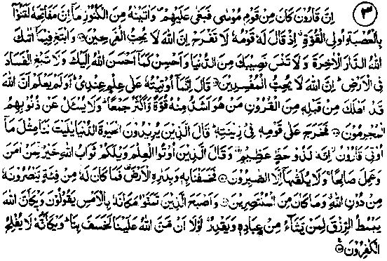

Chapter Five · Section (a): Ayaat of punishment for non-payment of Zakaat
2. The story of Qaroon (Korah)

Ayat 3
Qaroon (korah), whose story is well-known, was a cousin of Musaa Alaihissalam. The entire eighth section (Ruku) of Surah al-Qasas (quoted above) consists of his story. A translation of the Ayaat is given below: -
"Now Qaroon (Korah) was one of. Musaa’s folk but he oppressed them and We gave him so much treasure that the keys thereof would verily have been a burden for a troop of mighty men. When his own folk said to him. ‘Exult not; Lo! Allah loves not the exultant;
"But seek the abode of the Akhirah in that which Allah has given you and neglect not your portion of the world, and be you kind even as Allah has been kind to you; and seek not corruption in the earth; lo! Allah loves not corruptors’,
"He said: ‘I have been given all this on account of the knowledge I possess. Knew he not that Allah had destroyed, already of the generations before him of men who were mightier than him in strength and greater in respect of following? The guilty are not questioned of their sins.
“Then went he forth before his people in his pomp. Those who were desirous of the life of the world said; Ah, would that to us had been given the like of what has been given to Qaroon! Lo! he is lord of rare good fortune.
‘But those who had been given knowledge said ‘Woe to you! The reward of Allah for him who believes and does right is better, and only the steadfast will obtain it.
“So we caused him and his dwelling place to sink in the earth. Then, he had no host to help him against Allah, nor was he of those who can save themselves.
"And the morning, found those who had coveted his place, but yesterday, saying: Ah, well a day! Allah enlarges the provision for whom he will of His slaves and straitens it (for whom He will). If Allah had not been gracious to us, He would have caused it to swallow us (also). Ah, well a day! the disbelievers never prosper".
(al-Qasas: 76-82) -
Note: Ibne Abbas Radhiallaho anho says: "Qaroon (Korah) was a kinsman of Musaa Alaihissalam, a son of his paternal uncle. He was well versed in worldly knowledge and he was extremely jealous of Musaa Alaihissalam and. refused to pay Zakaat, although Musaa Alaihissalam told him that he had been commanded by Allah Ta‘ala to receive Zakaat from him (Qaroon). What is more, he said to the people, ‘Musaa wants to rob you, of your property, in the name of Zakaat. He commanded you to observe Salaat and you obeyed him patiently; he gave you other commands and you obeyed him against your will. Now that he is demanding Zakaat, you will have to pay it, even though it be burdensome for you.
The people said, "It is too much for us. Could you suggest some means to evade it" Qaroon said, "I have thought of a device. Let us induce some woman of ill-repute to make a false accusation against him in public and say that he has evil designs on her." "So they went to a whore and induced her to slander Musaa Alaihissalam in public, with promise of a large reward. Qaroon then went to Musaa Alaihissalam and said to him, "I suggest that you read out the commandments of Allah Ta'ala to a big gathering of the Banu Israel.” Musaa Alaihissalam liked the idea, asked Banu Israel to collect together and, when all were assembled, he began to proclaim the commandments of Allah Ta'ala to them, saying," Allah Ta'ala commands you to worship Him, to associate no partners with Him, to maintain ties of relationship with your kinsmen,.....etc., etc." In the course of his discourse, he also said, ‘Allah Ta'ala commands that if a married man commits adultery he should be stoned to death’. At this, the people said, ‘What if you yourself commit adultery?’ Musaa Alaihissalam said, ‘Even I should be stoned to death if I commit adultery, whereupon people said, ‘You have committed it? Musaa Alaihissalam said in surprise, ‘Are you accusing me of adultery’? They said, ‘Yes’, and called the whore, and asked her what she had to say about Musaa. Musaa Alaihissalam then asked her to speak on oath. She replied, ‘Since you have asked me to speak on oath, the truth of the matter is that they promised to give me such and such amount as a reward and induced me to accuse you in public. You are quite innocent of the crime’. On hearing this, Musaa Alaihissalam fell prostrate (in Sajdah), crying unto Allah, in which state the revelation came from Allah, ‘O Musaa, do not weep. We give you power over the earth in order that you may punish these people as you like. Command and it shall obey you! Musaa Alaihissalam raised up his head and commanded the earth to swallow them up. When they were sunk into the earth up to their ankles, they began to implore Musaa Alaihissalam in humility to grant them pardon, but he commanded the earth to swallow them further, and they were swallowed up to their necks. They cried louder and importuned him to forgive their sins, but Musaa Alaihissalam again ordered the earth to swallow them and so each one of the slanderers was swallowed up by the earth. After this, the revelation came from Allah Ta'ala to Musaa Alaihissalam, "The people were beseeching you for pardon and crying unto you in humility. By My Honour, had they cried unto Me and begged My pardon, I would have accepted their prayer.
In another Hadith, Ibne Abbas Radhiallaho anho is reported to have said, "The phrase ‘And do not neglect your portion of the world’ occurring in the Ayat means, ‘Perform (good) deeds, in the world, to serve you in the Akhirah’". Mujahid Rahmatullah alaihe says it means, "Showing obedience to Allah Ta'ala in this world’ in one’s portion of it, for which one shall get a reward in the Akhirah." Hasan Radhiallaho anho says, "Do not neglect your portion of the world’ means, ‘keep with you as much of worldly wealth as may suffice you for your needs; and send the rest in advance to the Akhirah.’ ‘Another Tradition reports him as saying, "Keep with you what may suffice you for a year, and give the rest away as Sadaqah. (Durre Manthur).'We have already quoted one of these Ayaat at serial No. 8 in Chapter Two, entitled ‘On deprecation of miserliness’.